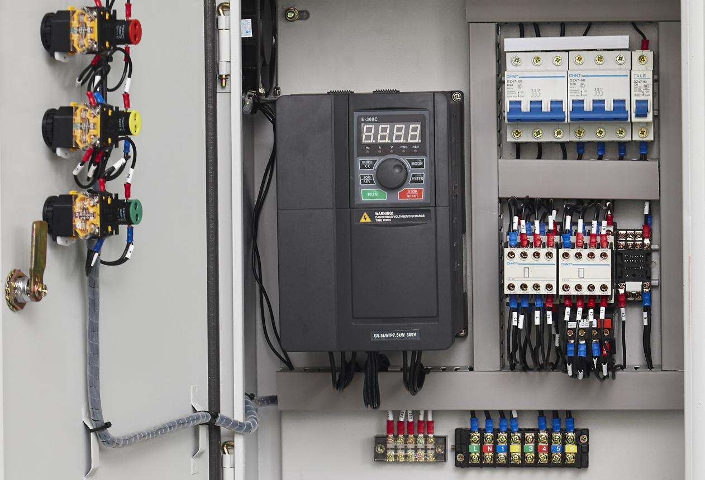
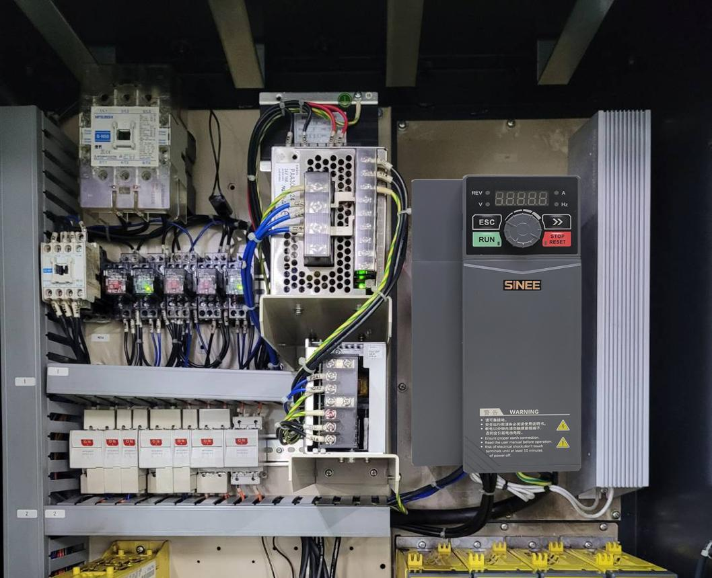
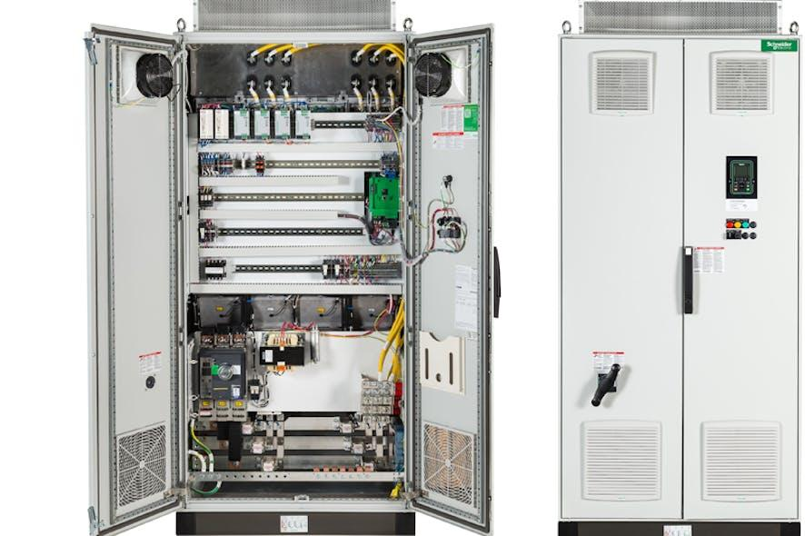

02_Overvoltage - Overvoltage: Fast Deceleration, Regenerative Energy
1. Definition
A VFD overvoltage fault occurs when the voltage monitored by the drive exceeds a specified limit. In many common VFD applications, this fault refers to excessive voltage in the internal DC bus, although the exact fault definition depends on the drive model.
A typical VFD converts incoming AC power into DC and then switches that DC through an inverter to produce variable-frequency AC for the motor.
Incoming AC supply
|
v
Rectifier
|
v
DC bus / DC link
|
v
Inverter
|
v
AC motor
The DC bus contains capacitors that store electrical energy. During normal operation, the rectifier supplies energy to the DC bus, and the inverter transfers energy from the DC bus to the motor.
However, when the motor slows down a rotating or moving load, the load may return mechanical energy to the motor. The motor can then act as a generator, sending electrical energy back toward the VFD's DC bus.
If that energy cannot be dissipated or returned to the supply quickly enough, the DC bus voltage rises and the VFD may trip on overvoltage.
Core principle: A VFD overvoltage fault often means that more energy is entering or remaining in the DC bus than the system can safely handle.
2. What causes VFD overvoltage?
The main causes are:
| Cause | How voltage rises | Example |
|---|---|---|
| Deceleration ramp too short | The motor regenerates energy faster than the drive can manage it | A conveyor is commanded to stop too quickly |
| High-inertia load | A large amount of stored rotational energy must be removed | A large fan, flywheel, or high-inertia conveyor |
| Overhauling load | The load drives the motor instead of the motor driving the load | A loaded vertical axis moves downward |
| Frequent braking | Energy accumulates faster than it can be dissipated | Repeated rapid stops in an automated station |
| Braking resistor problem | Regenerated energy cannot be dissipated through the intended braking circuit | Resistor disconnected or braking chopper fault |
| Regenerative unit problem | Energy cannot be returned to the supply as intended | Regenerative front end unavailable or faulty |
| Incoming supply overvoltage | Excessive supply voltage raises the DC bus voltage | Abnormally high incoming supply voltage |
| Incorrect braking configuration | The selected drive configuration cannot handle the application's energy | Braking hardware omitted from a high-inertia application |
The fault can occur even when the motor current is within normal limits. Overvoltage and overcurrent describe different electrical conditions.
3. Understanding regenerative energy
A rotating mass stores kinetic energy. When it slows down, that energy must go somewhere.
The kinetic energy of a rotating system is:
Where:
- \(E_k\) = rotational kinetic energy in joules.
- \(J\) = total equivalent moment of inertia in kg·m².
- \(\omega\) = angular speed in rad/s.
For a translating mass, such as a moving fixture, the kinetic energy is:
Where:
- \(m\) = moving mass in kg.
- \(v\) = linear speed in m/s.
The key observation is that kinetic energy increases with the square of speed. Doubling speed produces four times the kinetic energy for the same inertia or mass.
That is why a high-speed, high-inertia machine can create a substantial braking-energy problem.
Example: Automotive conveyor
Suppose a conveyor carries a heavy fixture at high speed. The PLC commands a stop.
- The VFD reduces the commanded frequency.
- The motor develops braking torque.
- The rotating motor and moving conveyor continue to carry kinetic energy.
- The motor operates regeneratively while decelerating, under suitable drive and control conditions.
- Electrical energy flows back toward the VFD's DC bus.
- If the bus voltage rises beyond its permitted limit, the VFD trips.
The problem is not necessarily a defective drive. The application may simply require more braking-energy management than the existing configuration provides.
4. Why a fast deceleration ramp causes overvoltage
A deceleration ramp determines how quickly the VFD reduces its output frequency from the current operating speed to a lower speed or zero.
Consider two settings:
- Deceleration time: 2 seconds.
- Deceleration time: 10 seconds.
For the same speed reduction, the 2-second ramp demands a faster stop. Depending on the load and control mode, this can require greater braking torque and a higher rate of energy transfer back to the drive.
Short deceleration time
|
v
Higher required braking torque
|
v
More rapid regenerative energy flow
|
v
DC bus voltage rises
|
v
Overvoltage trip, if the limit is exceeded
Increasing the deceleration time often helps because the energy is returned or dissipated more gradually.
However, increasing the ramp time is not always sufficient. A vertical axis, an overhauling load, or a machine that must stop rapidly may require a braking resistor, a regenerative drive, or another engineered braking solution.
Important distinction: A longer ramp reduces the rate of braking-energy transfer, but it does not eliminate the total kinetic energy that must be handled.
5. The three main ways to handle braking energy
Method 1: Longer deceleration ramp

Reduce the rate at which the load decelerates so that the drive can manage the energy within its permitted limits.
Advantages: Simple and often inexpensive if the process allows a longer stop.
Limitations: Increases stopping time and may not satisfy production or safety requirements.
Method 2: Dynamic braking resistor

A braking chopper switches a resistor into the DC bus circuit when the bus voltage reaches a control threshold. The resistor converts electrical energy into heat.
Advantages: Supports faster deceleration and repeated braking when correctly sized.
Limitations: Requires appropriate resistor and chopper ratings, thermal management, wiring, and protection.
Method 3: Regenerative drive

A suitable regenerative front end transfers braking energy back to the electrical supply rather than dissipating all of it as heat.
Advantages: Can improve energy efficiency in applications with substantial or frequent regeneration.
Limitations: Higher system complexity and cost; the supply interface and system must be designed for regenerative operation.
These methods solve related but different application requirements. Select the method according to braking energy, braking power, stopping time, duty cycle, supply arrangement, and the manufacturer's specifications.
6. Dynamic braking in more detail
A typical dynamic braking arrangement includes:
- A VFD with a suitable braking chopper, built-in or external.
- A braking resistor with appropriate resistance and power ratings.
- Correct wiring to the designated braking terminals.
- Adequate cooling and protection.
- Drive parameters configured according to the hardware.
Simplified energy flow:
Motor decelerates
|
v
Motor generates electrical energy
|
v
VFD DC bus voltage rises
|
v
Braking chopper switches ON
|
v
Braking resistor absorbs energy
|
v
Electrical energy becomes heat
The resistor does not make the energy disappear. It converts electrical energy into heat, which must be safely removed.
Braking resistor selection
The resistor must be selected using the drive manufacturer's specifications and the actual application.
Important considerations include:
| Parameter | Meaning |
|---|---|
| Resistance (Ω) | Must be within the drive or braking-chopper permitted range |
| Peak braking power (W or kW) | Power that may be required during a braking event |
| Energy per stop (J or kJ) | Energy that must be absorbed during one braking event |
| Duty cycle | How frequently braking occurs and how much time exists for cooling |
| Thermal rating | Whether the resistor can withstand the expected heat |
| Protection | Thermal switches, fusing, enclosure, and other required safeguards |
A resistor that is adequate for one stop may overheat during repeated stops. Also, selecting an arbitrarily low resistance is dangerous because it can exceed the braking chopper's current rating.
Never select a braking resistor based only on its physical size or wattage label. Follow the exact drive manual and engineering calculations.
7. How to recognize an overvoltage fault
The operating condition helps narrow the likely cause.
| Symptom | Possible explanation |
|---|---|
| Fault occurs when stopping | Deceleration ramp too short or excessive regenerative energy |
| Fault occurs only with a high-inertia load | Significant stored kinetic energy |
| Fault occurs when a vertical load moves downward | Overhauling load regenerates energy |
| Fault occurs after several rapid cycles | Braking hardware or resistor may be thermally overloaded, or the system may lack sufficient capacity |
| Fault occurs even when the motor is stationary | Incoming supply issue, DC bus problem, sensing issue, or drive hardware fault |
| Fault occurs at power-up | Incoming voltage or internal drive issue; exact timing and code matter |
| Fault appears after resistor replacement | Incorrect resistance, wiring, rating, or configuration |
| Fault occurs after an incoming supply event | Supply overvoltage or a related power-quality issue |
Do not assume every overvoltage fault is caused by a short deceleration ramp. Check whether the code specifically refers to the DC bus, incoming supply, or another voltage condition.
8. Overvoltage versus overcurrent
| Feature | Overvoltage | Overcurrent |
|---|---|---|
| Primary condition | Voltage exceeds its limit | Current exceeds its limit |
| Typical braking cause | Regenerative energy raises DC bus voltage | Excessive current demand or electrical fault |
| Common parameter-related cause | Deceleration ramp too short | Acceleration ramp too short |
| Typical corrective direction | Manage braking energy or investigate supply voltage | Investigate current demand, wiring, motor, load, and drive capacity |
| Common hardware involved | Braking chopper, resistor, regenerative front end | Power module, current sensing, motor circuit |
| Can occur together? | Yes | Yes |
A short acceleration ramp is commonly associated with increased current demand. A short deceleration ramp is commonly associated with increased regenerative energy and DC bus voltage.
These are diagnostic patterns, not absolute rules. A drive may encounter several fault conditions during the same event.
9. Step-by-step troubleshooting procedure
Step 1: Capture the fault details
Record:
- Exact VFD fault code and description.
- Drive make and model.
- Motor speed or output frequency when the fault occurred.
- Whether the fault occurred during acceleration, running, stopping, or power-up.
- Deceleration time and relevant braking parameters.
- DC bus voltage and event history, if available.
- Load condition and frequency of stopping cycles.
- Recent electrical, mechanical, or parameter changes.
Do not reset the drive before preserving available fault history if the information may be lost.
Step 2: Make the equipment safe
- Follow the site's lockout/tagout procedure.
- Isolate all relevant power and stored-energy sources.
- Wait the specified DC bus discharge time.
- Verify the absence of hazardous voltage using an approved meter and procedure.
- Consider gravity, suspended loads, spring energy, and mechanical movement.
- Do not disconnect braking components while the drive is energized.
A VFD's capacitors can retain hazardous energy after incoming power is removed. A display that has gone dark is not a safety verification.
Step 3: Check the incoming supply
A supply voltage problem can raise the DC bus independently of regenerative braking.
Check, using approved procedures:
- Incoming phase-to-phase voltage.
- Supply variation and recorded power-quality events.
- Loose or damaged supply connections.
- Relevant upstream electrical issues.
- Whether the fault occurs during power-up or normal deceleration.
Do not assume the incoming supply is healthy merely because other equipment on the same supply is operating.
Step 4: Inspect braking hardware
If the drive uses a braking resistor or external braking unit, verify:
- The correct component is installed.
- Resistance and ratings match the manufacturer's requirements.
- Connections and cables are intact.
- The resistor shows no obvious damage or overheating.
- Required thermal protection is present and correctly connected.
- The braking chopper and related diagnostics show no faults.
Resistance measurements must be made only after safe isolation and in accordance with the manufacturer's instructions. Some circuit arrangements require components to be disconnected for a valid measurement.
Step 5: Review the deceleration settings
Compare the programmed ramp with the machine's requirements.
If the process permits, a controlled increase in deceleration time may help determine whether braking demand is the cause. Do not alter safety-related stopping functions or violate the required stopping time.
If the machine must stop quickly, investigate whether the braking resistor, braking chopper, or regenerative drive has sufficient capacity.
Step 6: Evaluate the application
Consider:
- Load inertia and operating speed.
- Vertical or overhauling loads.
- Number of stops per hour.
- Energy per stop.
- Required stopping time.
- Resistor thermal duty.
- Regenerative system capability.
A system that stops successfully once may still fail after repeated cycles because the braking hardware accumulates heat.
Step 7: Confirm the repair
After correction, verify the approved operating cycle under representative load conditions. Monitor fault history, DC bus voltage where supported, braking performance, and resistor temperature using suitable methods.
Document the confirmed cause, correction, and verification result.
10. Practical automotive examples
Case A: Conveyor trips when the PLC commands STOP
Observation: The conveyor runs normally but faults when a stop command is issued.
Possible cause: The deceleration ramp demands more braking energy than the system can manage.
Checks: Fault code, deceleration setting, load inertia, DC bus trend, and braking hardware.
Possible corrective action: Adjust the ramp if process requirements permit, or engineer an appropriate braking solution.
Case B: Robotic station stops frequently
Observation: A motor-driven mechanism stops successfully for the first few cycles but later trips on overvoltage.
Possible cause: Repeated regenerative braking exceeds the available energy-handling or thermal capacity.
Checks: Braking duty cycle, resistor rating, resistor temperature, braking chopper diagnostics, and actual stopping profile.
Possible corrective action: Correct the duty-cycle mismatch, repair the braking circuit, or upgrade the braking arrangement after engineering review.
Case C: Vertical axis regenerates during downward movement
Observation: A loaded axis drives the motor while moving downward, and the VFD reports overvoltage.
Possible cause: The load is overhauling the motor and regenerating energy.
Checks: Drive suitability, braking system, load characteristics, and manufacturer-approved control configuration.
Possible corrective action: Use a properly engineered braking or regenerative arrangement. Vertical axes also require an appropriate mechanical holding brake and safety design; the VFD's ability to regulate motion must not be treated as a substitute for safe load holding.
Case D: Fault occurs even with a long deceleration ramp
Observation: Increasing the ramp does not remove the overvoltage fault.
Possible causes: Incoming supply overvoltage, failed or incorrectly selected braking hardware, an unsuitable application configuration, or an internal drive fault.
Checks: Exact fault definition, supply measurements, braking hardware, and drive diagnostics.
Lesson: A parameter change is a diagnostic test only when it is safe and its results are evaluated. It is not a universal repair.
11. Preventive maintenance checklist
- Verify deceleration settings against the actual load and required stopping time.
- Check whether the drive has adequate braking capability for the application.
- Inspect braking resistors and connections for damage or overheating.
- Verify braking chopper or regenerative-unit diagnostics.
- Confirm resistor resistance, peak power, energy, and duty-cycle ratings.
- Monitor incoming supply voltage where appropriate.
- Trend fault frequency and braking-related events.
- Review repeated-stop duty cycles after production changes.
- Preserve approved drive parameter backups.
- Record root causes and corrective actions in maintenance history.
12. Interview questions and answers
Q1. What is a VFD overvoltage fault?
It occurs when a monitored voltage, commonly the DC bus voltage, exceeds the drive's permitted limit.
Q2. Why does a VFD trip on overvoltage during deceleration?
The motor may regenerate energy during braking. If the energy raises the DC bus voltage beyond its permitted limit, the drive trips.
Q3. Why can increasing deceleration time help?
It reduces the rate at which braking energy must be handled. It does not eliminate the total energy that must be absorbed or returned.
Q4. What is a braking resistor?
It is a resistor used with a suitable braking chopper to convert regenerated electrical energy into heat.
Q5. What is regenerative braking?
It is an operating condition in which the motor acts as a generator and returns mechanical energy as electrical energy. A suitable drive system can dissipate or return that energy.
Q6. What is the difference between dynamic and regenerative braking?
Dynamic braking typically dissipates regenerated energy in a resistor. A regenerative drive returns energy to the electrical supply through a suitable power-conversion system.
Q7. Why might overvoltage appear only after repeated stops?
The braking system may be thermally overloaded or insufficiently rated for the frequency and energy of the braking cycles.
Q8. Can an incoming supply problem cause overvoltage?
Yes. Excessive incoming voltage can raise the DC bus voltage even when the motor is not regenerating.
Q9. What should be checked before replacing a VFD?
The fault definition and history, supply voltage, deceleration parameters, load inertia, braking hardware, and application suitability should be investigated first.
Q10. Why is a braking resistor not selected using wattage alone?
The design must account for resistance, peak power, energy per stop, duty cycle, thermal limits, and the drive manufacturer's requirements.
13. Practical exercises
Exercise 1: Conveyor stopping fault
A conveyor operates at 40 Hz and trips on DC bus overvoltage when the PLC commands a rapid stop.
Identify:
- The likely energy flow.
- The first parameters and diagnostic records to inspect.
- The conditions under which a longer deceleration ramp may be appropriate.
- When braking hardware may be required.
Exercise 2: Repeated-cycle fault
A machine runs for several minutes without a fault but trips after many rapid stop-start cycles.
Explain why the braking resistor's duty cycle and thermal capacity matter, and list the evidence required before changing hardware.
Exercise 3: Supply versus regeneration
A VFD reports overvoltage at power-up before the motor starts.
Explain why this symptom changes the diagnostic direction and identify the supply and drive checks that should be considered.
Exercise 4: Create a maintenance record
| Field | Example entry |
|---|---|
| Machine | Conveyor station |
| Fault | Exact DC bus overvoltage code |
| Operating stage | Deceleration |
| Load | Loaded fixture |
| Deceleration time | Actual configured value |
| DC bus trend | Actual logged measurement |
| Braking hardware | Installed type and ratings |
| Suspected cause | Excessive regenerative energy |
| Confirmed root cause | Complete after investigation |
| Corrective action | Verified adjustment or repair |
| Verification | Approved stopping-cycle test |
14. Final mental model
- Fault during stopping: Investigate regenerative energy and deceleration demand.
- High-inertia or overhauling load: Calculate and manage braking energy.
- Repeated-cycle fault: Investigate braking power, duty cycle, and thermal capacity.
- Fault at power-up: Investigate supply voltage and drive condition.
- Braking resistor fault: Verify its rating, wiring, thermal protection, and braking-chopper operation.
- Fast stop required: Determine whether the system needs engineered dynamic braking or regenerative capability.
The central diagnostic question is: Where does the energy go when the motor slows down? If the drive cannot safely dissipate or return that energy, the DC bus voltage can rise beyond its permitted limit.
Next topic in sequence
02_PLAN_WISE_2026\02_INDUSTRY3_0\02_Auto_Tech\04_VFD\09_Faults\03_Undervoltage
03_Undervoltage - Undervoltage: Supply dip or loss